Armas
Si vas a hacer un asalto, ¿necesitas arma verdad?
En PAYDAY2 hay mas de 150 ARMAS.
Pasando por Escopetas, Fusiles, Duales, Explosivas, etc.
Durante todo este articulo, te enseñare todos los tipos de armas que el juego te da.
Te hablare de los tipos de armas, estadisticas y para cerrar, una recomendación de parte mia.
Primarias
Fusiles de Asalto
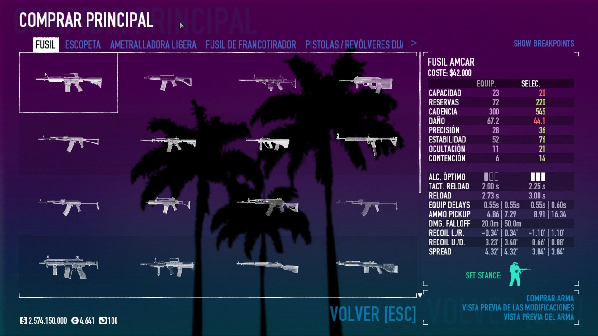
Los fusiles de asaltos son muy buenos para englobar muchas builds.
No dependen de habilidades para ser usados de forma más eficiente.
Ademas son las unicas armas que no sufren del alcance optimo, osea, no baja el daño segun la
distancia.
Más abajo te explico que es el alcance optimo. CLICK ACA
Algunos fusiles son automaticos con la opcion de pasarlos a semiautomatico,
mientras que otros son estrictamente semiautomaticos.
Escopetas
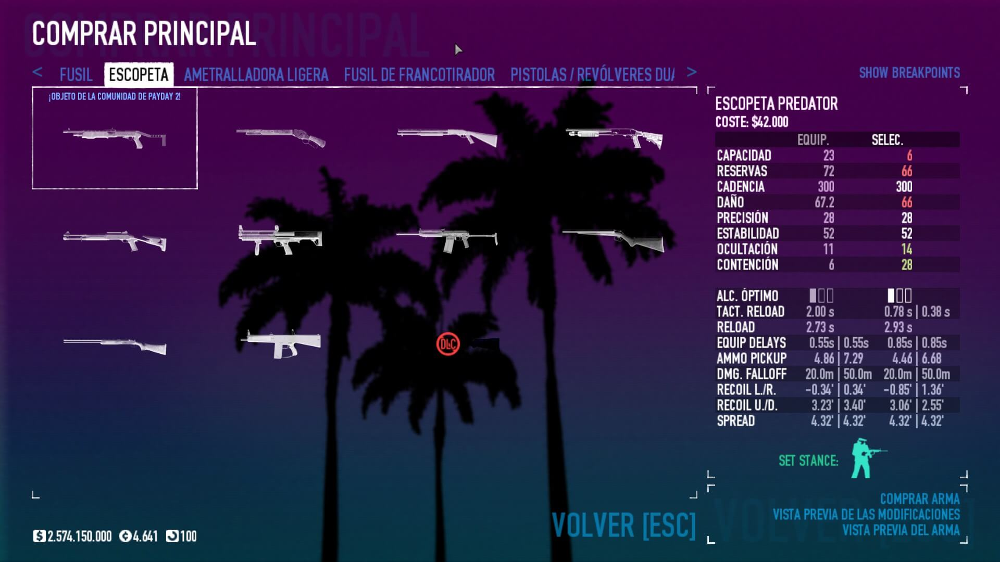
Ultra efectivas a corta distancia, ademas que con la Sub-Rama de Escopetero,
puedes aumentar la eficiencia de todas las escopetas, desde mejorar el daño, recarga, cargador,
etc.
Escopetero tiene una de las mejores habilidades, OVERKILL que en su version ACE,
cada vez que mates alguien con una escopeta, aumentara 75% el daño de esta y tu otra arma (sea
cual sea) durante 20 segundos.
Ademas, puedes ponerle a las escopetas munición incendiaria, explosiva, AP o normales pero hacen
mas daño.
Tienes escopetas de bombeo, automaticas o semiautomaticas y con cargador extraible.
Ametralladoras
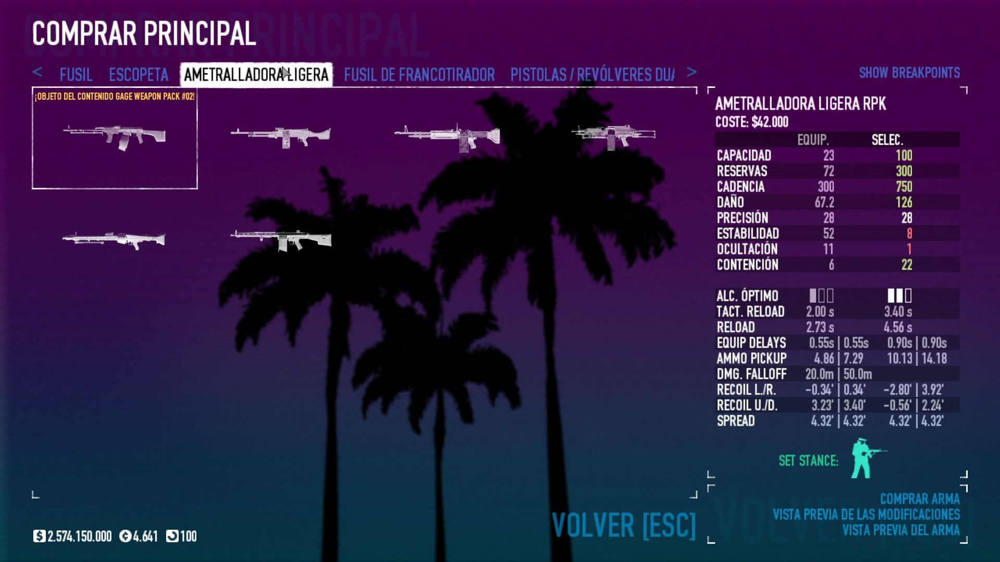
Las ametralladoras pesadas son armas con gran cadencia y un amplio cargador.
Son ideales a distancias cortas y medias.
Estas ametralladoras tiene un daño promedio de 80 hacia arriba.
Combina estas armas con la habilidad PERICIA EN EL CUERPO HUMANO en ACE,
y haras el 90% del daño que harias disparando en la cabeza, solo que en cualquier parte del
cuerpo.
Francotiradores
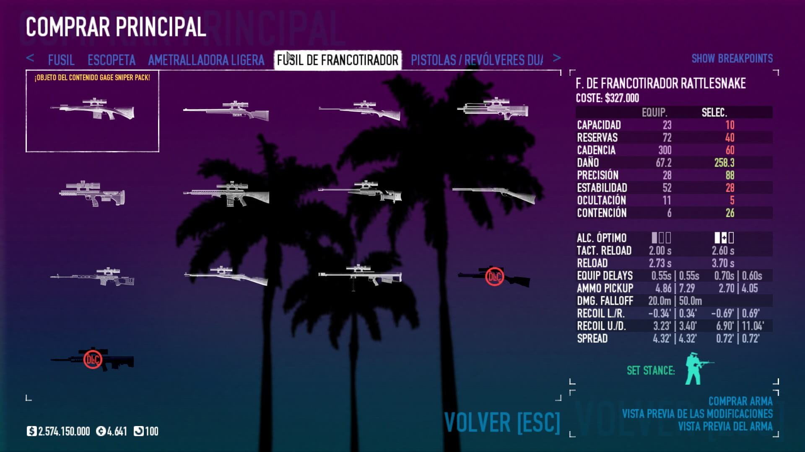
Ideales para largas distancias, y poseen un bonus de daño,
este se consigue si disparas al objetivo a mas de 50 metros.
Complementa el francotirador con la habilidad DAÑO COLATERAL en ACE,
si matas a un enemigo de un disparo en la cabeza, gran parte de ese daño se pasara a todos los
enemigos
en un radio de un metro. Puedes matar a grandes grupos de enemigos con esta habilidad.
Armas Duales
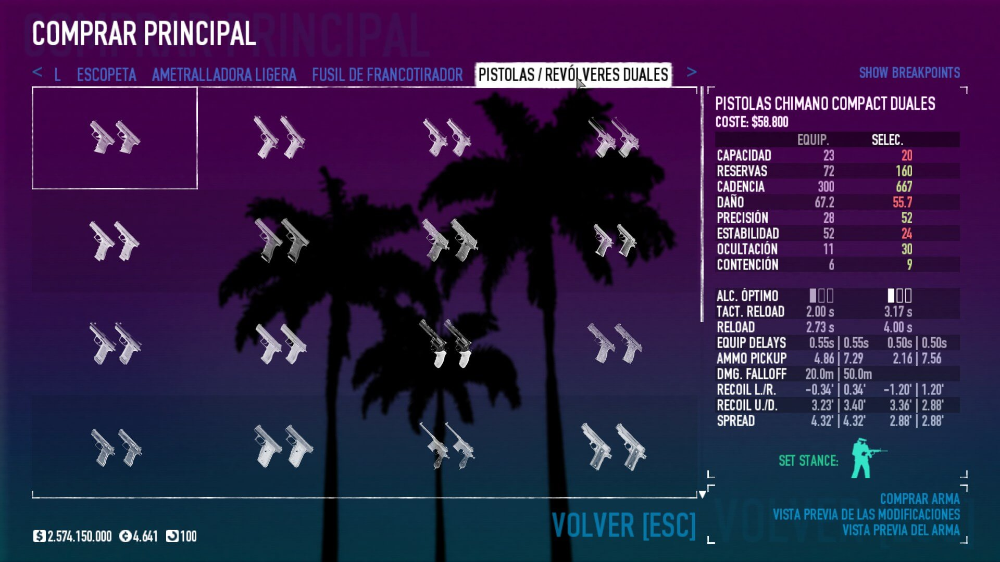 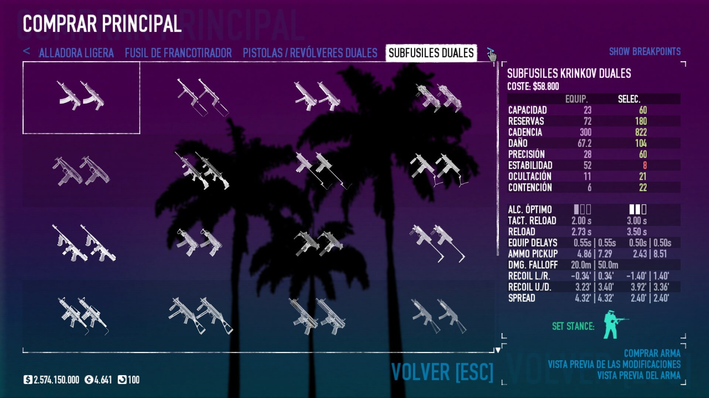 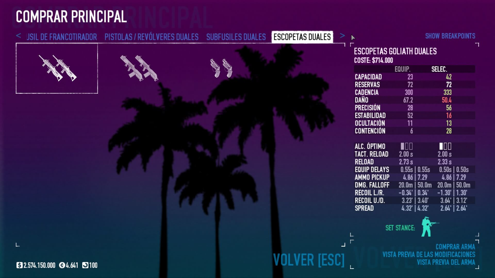
¡Las armas duales son el doble de divertidas!
Tienes pistolas/revolveres, subfusiles y escopetas duales.
Estas armas, si las juntas con las habilidades correctas,
Pueden hacer grandes cantidades de daño gracias a su cadencia de fuego.
Los criticos le caen de perlas a estas armas.
Especiales
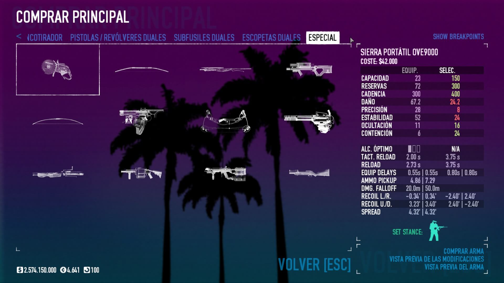
En especiales tenemos todo tipo de armas.
Pasando por arcos, ballestas, lanzagrandas, minigun, lanzallamas y la sierra OVE9000.
Estas armas más que nada son divertidas de usar, ya que es dificil hacer una build estable con
ellas.
La más efectiva es la sierra OVE9000, que te sera de gran ayuda en misiones para abrir puertas o
bovedas.
Secundarias
Pistolas/Revolveres
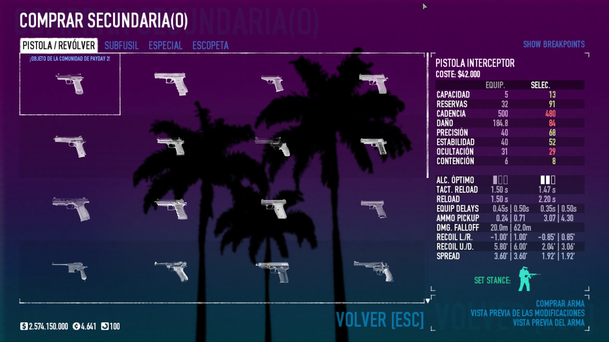
Estas armas tienen su propia sub-rama PISTOLERO, que aumenta mucho la eficacia de
estas.
Una de las mejores pistolas es la 5/7 AP, es capaz de atravesar el blindaje de los
escudos.
Subfusiles
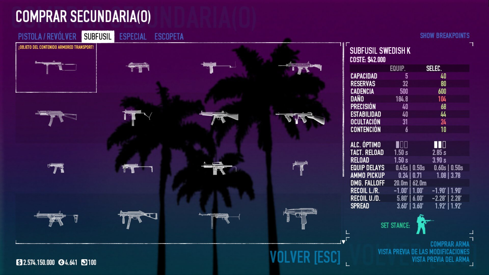
Son armas que pueden darte gran apoyo en distancias cortas y medias.
Ademas, si juntas estas armas con criticos les dara un muy buen uso.
Elige bien tu subfusil, mientras más daño haga menos munición agarrara, y viceversa.
Especiales
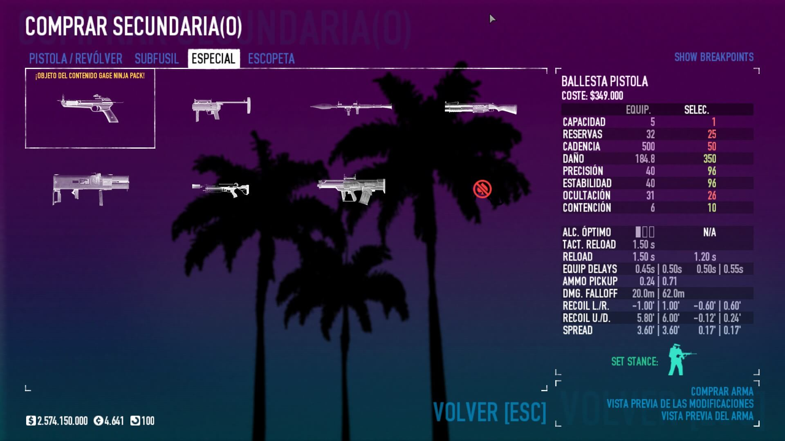
Tenesmos balleta,lanzagrandas,lanzamisiles,lanzallamas y la sierra (solo con habilidades).
El RPG es el arma con más daño de todo el juego, pero, no agarra munición de enemigos.
Una muy buena opción es el lanzagrandas China-Puff que posee 3 balas en el
cargador,
ademas de ser el unico lanzagranadas que puede hacer daño critico (Esto es un bug sin arreglar).
Escopetas
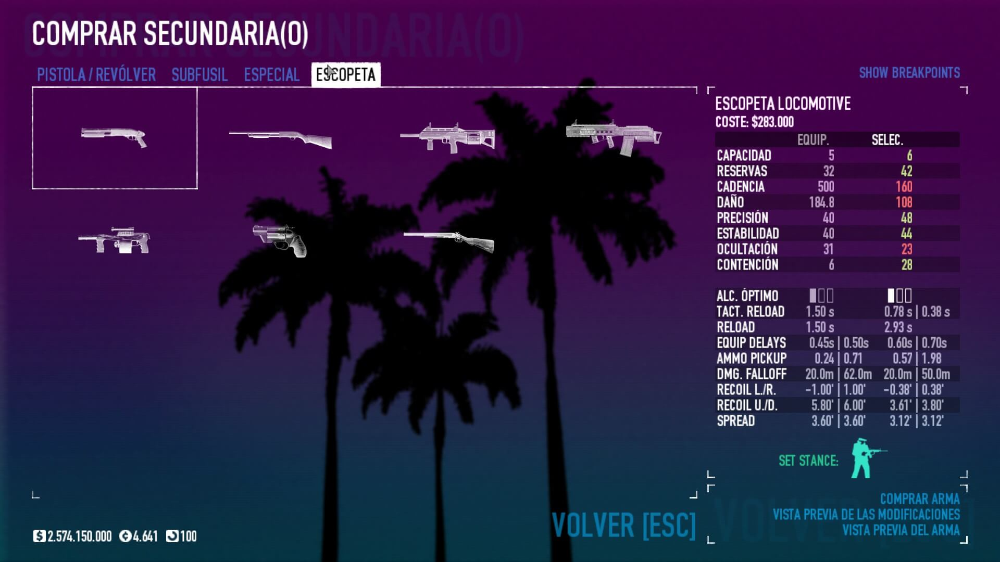
Muy efectivas a corta distancia y con su propia sub-rama de ESCOPETERO,
para aumentar mucho más su eficacia.
En las secundarias esta la Escopeta Juez, tiene muy buena ocultación,
y es muy usada para sigilo. Si gustas, tambien la puedes usar en asalto con balas explosivas o
de fuego.
Cuerpo a Cuerpo

Tenemos todo tipo de armas cuerpo a cuerpo, sierra, puños de boxeo,
cuchillos, electricas, hachas, espadas, etc.
Pero, la mayor parte de estas armas son casi inservibles sin las habilidades
de la sub-rama de LUCHADOR.
Con esta sub-rama aprovecharas gran parte de las armas cuerpo a cuerpo.
Te recomiendo la Katana y el Piolet, son las 2 mejores del juego.
En caso que no uses estas habilidades, ve con las armas electricas.
Tanto si eliges los Puños Electricos como el Baston Buzzer,
electrocuta a los enemigos y sera vulnerable a tus disparos.
Estadisticas
Habras notado que cada arma tiene sus propias estadisticas.
Ocultación, Estabilidad, Daño, Presición, Cadencia, Reservas, Capacidad y
Contención
Durante este ultima sección, explicare en que influye cada una y
datos extra que el juego te explica poco y nada.
- CAPACIDAD Es la cantidad de balas que aguanta el cargador del
arma.
Esto se puede modificar con las modificaciones del arma y con ciertas habilidades. - RESERVAS Es la cantidad maxima de balas que podemos tener en
reserva.
Esto se puede modificar con la habilidad "Armado hasta los dientes". - CADENCIA Es la cantidad de balas que dispara por minuto.
Claramente, mientras mayor cadencia, más rapido disparara el arma. - DAÑO Es el daño que hace nuestras armas, este se multiplica X3 al
dar en la cabeza.
El daño de la armas se puede aumentar con ciertas boquillas y habilidades. - PRECISIÓN Mientras más precisa sea el arma, mas facil sera dar a
objetivos lejanos.
Esta se puede modificar con las modificaciones del arma y con ciertas habilidades. - ESTABILIDAD Mientras más estable sea el arma, menos sufriremos el
recoil del arma y sera mas facil apuntar.
Esto se puede modificar con las modificaciones del arma y con ciertas habilidades. - OCULTACIÓN Mientras mayor ocultación tenga, mas influira en tu
ocultación en general.
Las armas con mucha ocultación se pueden beneficiar de criticos y son necesarias para sigilo.
La ocultación del arma se puede modificar con las modificaciones de esta y con ciertas habilidades. - CONTENCIÓN Mientras mayor sea, es más facil darle temor a los
enemigos.
Si le pones un supresor al arma bajara mucho su contención, ciertas boquillas la aumentan. - ALCANCE ÓPTIMO Es la distancia que afecta al daño del arma.
Mientras mas bajo sea, el arma hara cada vez menos daño a distancia medias y largas.
Armas como los fusiles de asalto y los snipers, no sufren de esto. Es más, los sniper hacen daño extra a distancia largas.
Recomendación
Una de las habilidades más efectivas y usadas es OVERKILL en ACE.
Debido a que cada vez que mates con una escopeta, esta y tu otra arma aumentara su daño un 75%
durante 20 segundos,
ademas de darte un cambio de arma mucho más rapido.
Con esto podremos lograr hacer grandes cantidades de daño y es muy efectivo para dificultades
altas.
Por ejemplo, aca uso la escopeta Grimm y las Krinkov duales.
 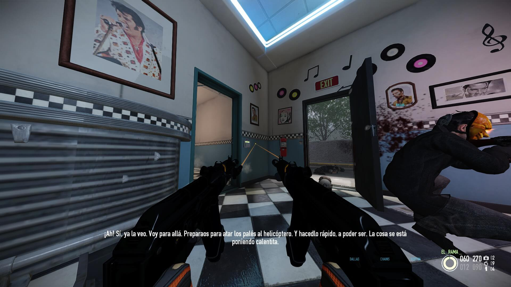
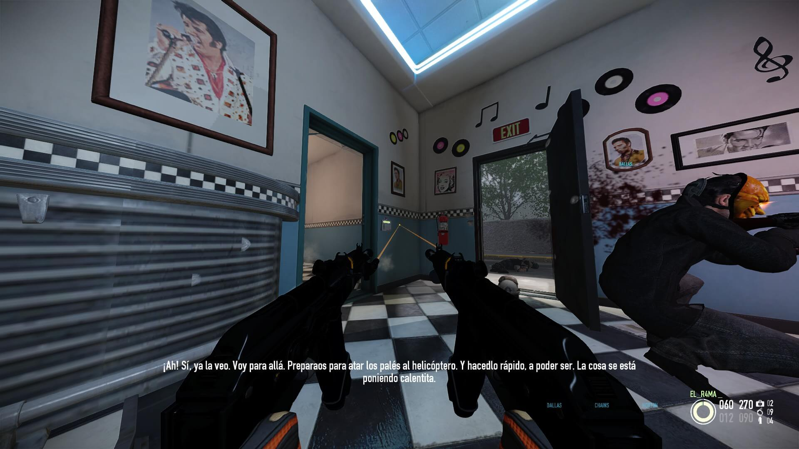
Al matar alguien con la escopeta, aumento el daño de mis Krinkov y si junto esto con
criticos,
hago un daño masivo que puedo usar, siempre que desee, a mi favor.